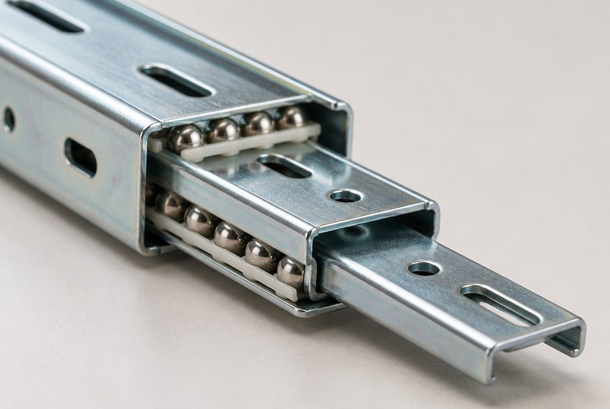
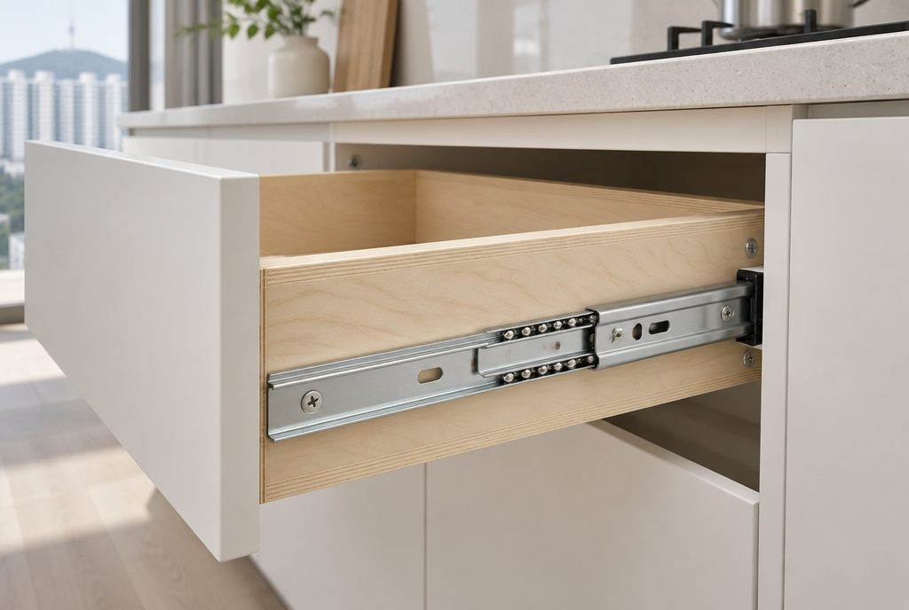
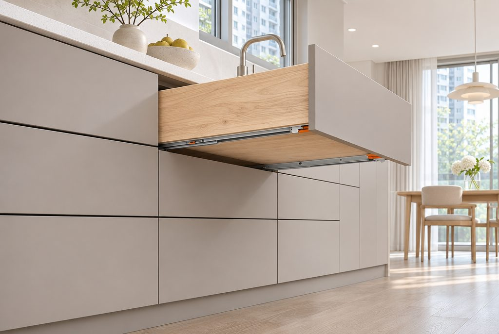
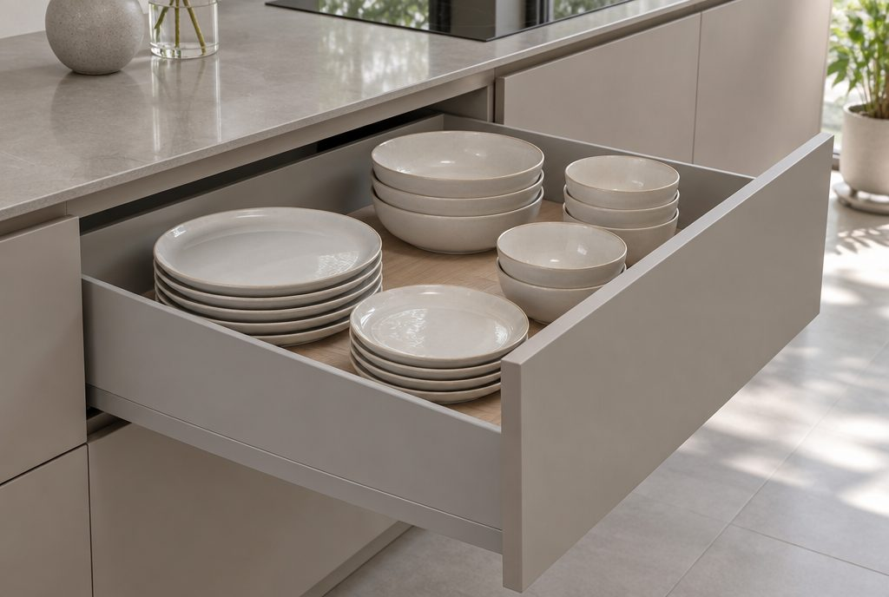
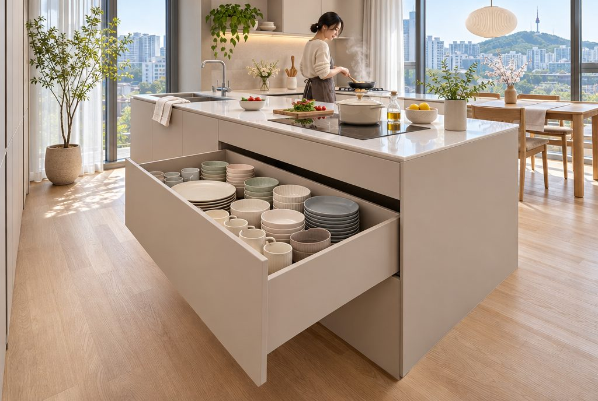
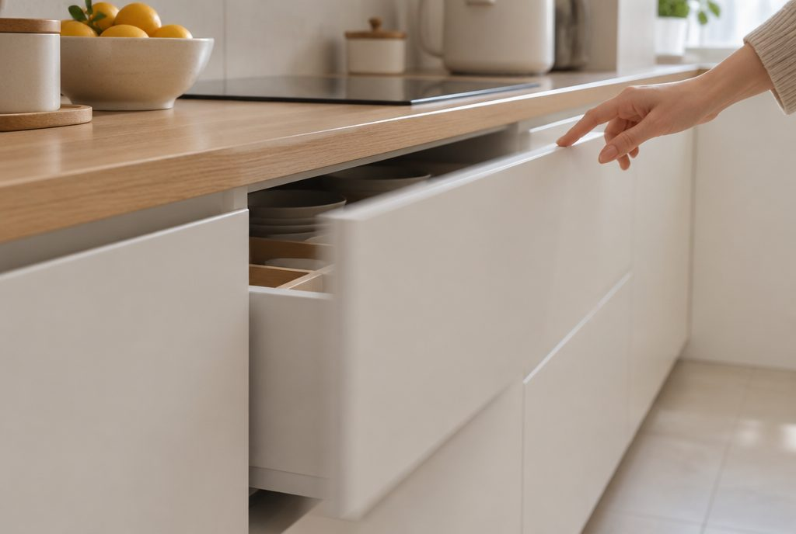

하드웨어
철물 시리즈 01
서랍레일, 볼레일 · 언더레일 · 박스 시스템 읽기
레일이 하는 일과 구조의 차이, 인출 길이 · 하중 · 댐핑을 보고 견적서에서 무엇을 확인할지 정리합니다.
1서랍레일이란
서랍레일은 서랍을 몸통(장)에 걸어 앞뒤로 움직이게 하는 철물입니다. 서랍이 얼마나 부드럽게 나오는지, 무거운 물건을 넣어도 처지지 않는지, 마지막에 조용히 닫히는지는 대부분 레일이 결정합니다. 레일은 서랍 안쪽에 숨어 있어 고를 때 놓치기 쉽지만, 같은 장이라도 레일에 따라 쓸 수 있는 공간과 사용감이 달라집니다.

1.1레일이 하는 세 가지 일
- 무게를 받칩니다
- 서랍과 그 안의 물건 무게를 몸통으로 전달합니다. 레일마다 견딜 수 있는 무게, 곧 허용 하중이 정해져 있습니다.
- 곧게 안내합니다
- 서랍이 기울거나 흔들리지 않고 한 방향으로만 움직이게 합니다.
- 닫힘을 다룹니다
- 댐핑(소프트클로즈) 레일은 닫히기 직전 구간에서 속도를 줄여, 서랍이 부딪히지 않고 천천히 닫히게 합니다.
2붙는 자리에 따른 세 가지 구조
레일은 서랍의 어디에 붙느냐에 따라 볼레일, 언더레일, 박스 시스템으로 나뉩니다. 붙는 자리가 다르면 서랍 상자를 짜는 방법과 남는 공간도 달라집니다.
2.1볼레일 — 서랍 옆면에 붙는 레일

가장 널리 쓰이는 형식입니다. 레일이 서랍 옆면과 몸통 사이에 들어가므로, 서랍 상자의 폭은 그 틈만큼 칸보다 좁게 짭니다. 볼베어링으로 움직이며, 서랍을 열면 옆에 레일이 드러나 보입니다.
2.2언더레일 — 서랍 밑에 숨는 레일

레일을 서랍 밑에 감춥니다. 서랍을 열었을 때 옆면이 깔끔하게 보이는 대신, 서랍 밑에 레일 자리가 필요해서 같은 칸이라도 서랍 안쪽 높이가 조금 줄 수 있습니다. 서랍 상자는 그 레일 규격에 맞는 방식으로 짜야 합니다.
2.3박스 시스템 — 레일과 금속 옆판이 한 벌

레일과 금속 옆판이 한 벌로 나옵니다. 옆판을 따로 짜지 않고 서랍 바닥과 뒤판만 맞춰 끼우는 구조라, 서랍마다 모양과 움직임이 고르게 나옵니다.
| 종류 | 붙는 자리 | 서랍을 열면 |
|---|---|---|
| 볼레일 | 서랍 옆면과 몸통 사이. 볼베어링으로 움직입니다. | 옆에 레일이 보입니다. |
| 언더레일 | 서랍 밑 | 레일이 밑에 숨어 잘 보이지 않습니다. |
| 박스 시스템 | 레일과 금속 옆판이 한 벌 | 금속 옆판이 서랍 옆면이 됩니다. |
3사용감을 가르는 네 가지
같은 종류의 레일이라도 인출 길이, 레일 길이, 허용 하중, 댐핑에 따라 쓰는 느낌이 달라집니다.
3.1인출 길이

서랍 전체가 몸통 밖으로 나오는 것을 완전 인출, 뒤쪽 일부가 몸통 안에 남는 것을 부분 인출이라고 부릅니다. 부분 인출 서랍은 뒤쪽 물건을 꺼내려면 손을 안으로 넣어야 합니다. 깊은 서랍에 큰 물건을 넣을 계획이면 인출 길이를 먼저 확인합니다.
3.2레일 길이와 장 깊이
레일은 길이별 규격으로 나옵니다. 장 깊이보다 레일이 많이 짧으면 서랍도 짧아져 장 안쪽에 공간이 남습니다. 견적서에 레일 길이가 적혀 있는지, 그 길이가 장 깊이에 맞는지 봅니다.
3.3허용 하중
레일마다 견디는 무게가 정해져 있습니다. 하중보다 무거운 물건을 넣으면 서랍이 처지거나 움직임이 뻑뻑해질 수 있습니다. 냄비, 그릇처럼 무거운 것을 넣을 서랍이면 그 레일의 허용 하중을 물어봅니다.
3.4댐핑(소프트클로즈)

볼레일, 언더레일, 박스 시스템 모두 천천히 닫히는 댐핑 제품이 있습니다. 레일 안의 댐퍼가 닫히기 직전 구간에서 속도를 줄여, 세게 밀어도 서랍이 부딪히지 않습니다. 같은 이름의 레일이라도 댐핑이 있는 것과 없는 것이 따로 나오므로, 견적서에 「댐핑」이나 「소프트클로즈」가 적혀 있는지 봅니다.
4국내에서 볼 수 있는 브랜드
제품명은 각 회사 공식 누리집 표기(2026년 10월 확인)입니다. 러너는 서랍 밑에 숨는 레일을 부르는 이름입니다. 로고는 각 회사 공식 누리집의 것을 그대로 썼습니다.
4.1해외 브랜드
| 브랜드 | 나라 | 서랍 · 레일 제품 |
|---|---|---|
 Blum(블룸) Blum(블룸) |
오스트리아 | 박스 LEGRABOX · MERIVOBOX · TANDEMBOX, 러너 MOVENTO · TANDEM |
| Hettich(헤티히) | 독일 | 박스 AvanTech YOU · ArciTech · InnoTech Atira, 러너 Actro 5D · Quadro, 볼레일 KA |
| Grass(그라스) | 오스트리아 | 박스 Nova Pro Scala · Vionaro, 러너 Dynapro · Dynaneo |
 Salice(살리체) Salice(살리체) |
이탈리아 | 숨은 러너, Adapto · Lineabox Easy 서랍 |
해외 브랜드는 국내 수입 · 유통처를 거쳐 들어옵니다. 고장 났을 때 부품을 어디서 구하고 A/S를 누가 맡는지 미리 물어봅니다.
4.2국산 브랜드
| 브랜드 | 서랍 · 레일 제품 |
|---|---|
| IREX(삼성정밀공업) | 볼레일 · 댐핑 볼레일 · 언더레일, 서랍 |
| 문주하드웨어 | 볼레일 · 서랍 |
| 세일하드웨어 | 볼레일 · 언더레일 · 서랍 |
| 전한슬라이드 | 볼베어링 레일 · 언더레일 |
5견적서에서 레일 확인하기
견적서에 「서랍레일 포함」처럼 한 단어로만 적혀 있으면 어떤 레일이 들어가는지 알 수 없습니다. 레일 칸에 아래 일곱 가지가 적혀 있는지 한 번에 확인합니다.
| 항목 | 적혀 있어야 할 내용 | 왜 확인하나 | 자주 놓치는 것 |
|---|---|---|---|
| 종류 | 볼레일 · 언더레일 · 박스 시스템 | 붙는 자리에 따라 서랍 상자를 짜는 방법과 안쪽 높이가 달라집니다. | 「서랍레일 포함」처럼 종류 없이 적힌 견적 |
| 인출 | 완전 인출 · 부분 인출 | 부분 인출이면 뒤쪽 물건을 꺼낼 때 손을 안으로 넣어야 합니다. | 깊은 서랍에 부분 인출 레일이 들어가는지 |
| 댐핑 | 댐핑(소프트클로즈) 있음 · 없음 | 같은 이름의 레일도 댐핑이 있는 것과 없는 것이 따로 나옵니다. | 댐핑 여부가 빠진 견적 |
| 길이 | 장 깊이에 맞춘 레일 길이 | 레일이 장 깊이보다 많이 짧으면 서랍도 짧아져 안쪽 공간이 남습니다. | 장 깊이와 레일 길이를 맞춰 보지 않음 |
| 하중 | 허용 하중 | 하중보다 무거우면 서랍이 처지거나 움직임이 뻑뻑해질 수 있습니다. | 냄비 · 그릇 서랍의 하중을 묻지 않음 |
| 브랜드 · 제품명 | 브랜드와 제품 계열 이름 | 같은 브랜드라도 제품 계열에 따라 기능이 다릅니다. | 브랜드만 적고 제품명이 없음 |
| 부품 · A/S | 국내 수입 · 유통처와 A/S 창구 | 해외 브랜드는 국내 수입 · 유통처를 거쳐 들어옵니다. | 고장 났을 때 연락할 곳을 모름 |
고객이 확인할 것
- 서랍레일 종류(볼레일 · 언더레일 · 박스)와 댐핑 여부
- 완전 인출인지, 부분 인출인지
- 레일 길이가 장 깊이에 맞는지
- 무거운 물건을 넣을 서랍의 허용 하중
- 견적서에 브랜드와 제품명이 적혀 있는지
- 부품 · A/S를 받을 국내 창구